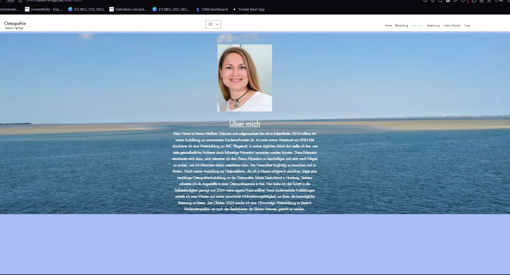

Ganzheitliche osteopathische Behandlungen für Erwachsene und Kinder. Sanft, individuell und mit dem Blick auf den ganzen Menschen.

Verena Meißner
Osteopathie betrachtet den Körper als Einheit. Oft liegt die Ursache von Beschwerden weit entfernt von dem Ort, an dem der Schmerz sitzt.
Rückenschmerzen, Bandscheibenbeschwerden, Ischias, Verspannungen im Nacken- und Schulterbereich.
Spannungskopfschmerzen, Migräne, Schwindel und Tinnitus durch funktionelle Blockaden.
Knie-, Hüft- und Schulterbeschwerden, Sportverletzungen, Überlastungssyndrome und Bewegungseinschränkungen.
Funktionelle Magen-Darm-Beschwerden, Reizdarm, Blasenbeschwerden und Organmobilität.
Dreimonatskoliken, Schlafprobleme, Schreikinder, Haltungsauffälligkeiten und Folgen schwieriger Geburten.
Rückenschmerzen in der Schwangerschaft, Beckenbeschwerden, Nachsorge und Beckenbodenproblematiken.
Dies ist keine vollständige Liste. Bei anderen Beschwerden gerne direkt anfragen.
Je nach Befund setze ich unterschiedliche Techniken ein, um deinen Körper dabei zu unterstützen, sich selbst zu regulieren.
Bewegungsapparat
Behandlung von Knochen, Gelenken, Muskeln und Faszien. Durch gezielte Mobilisierung und Manipulation werden Blockaden gelöst, die Beweglichkeit wiederhergestellt und Schmerzen gelindert.
Innere Organe
Organe brauchen Bewegungsfreiheit, um optimal zu funktionieren. Durch sanfte Techniken werden Spannungen im Bauchraum gelöst, die Organbeweglichkeit verbessert und Beschwerden nachhaltig behandelt.
Nervensystem & Schädel
Sehr sanfte Arbeit am Schädel, der Wirbelsäule und dem Kreuzbein. Durch die Harmonisierung des kraniosakralen Rhythmus werden Spannungen im Nervensystem gelöst und das Gleichgewicht gefördert.
Jede Behandlung ist individuell. Ich nehme mir die Zeit, die du und dein Körper brauchen.
Ich nehme mir Zeit für ein ausführliches Gespräch. Ich frage nach aktuellen Beschwerden, der Krankengeschichte und möglichen Zusammenhängen, um ein umfassendes Bild zu bekommen.
Ich taste verschiedene Bereiche des Körpers ab, um Spannungen, Bewegungseinschränkungen oder Dysfunktionen zu erspüren. Ich suche nicht nur dort, wo der Schmerz sitzt.
Auf Basis der Untersuchung beginne ich die Behandlung. Ich verwende sanfte Manipulationen, Dehnungen oder Drucktechniken, um Blockaden zu lösen, die natürliche Beweglichkeit wiederherzustellen und das Gleichgewicht im Körper zu fördern.
Nach der Behandlung gebe ich dir Hinweise, wie du den Heilungsprozess zu Hause unterstützen kannst: durch Übungen, Verhaltensanpassungen oder kurze Auszeiten im Alltag.
Eine Behandlung dauert in der Regel zwischen 40 und 60 Minuten. Wie viele Sitzungen sinnvoll sind, hängt von deiner individuellen Situation ab und besprechen wir gemeinsam.
Mein Name ist Verena Meißner. Geboren und aufgewachsen bin ich in Eckernförde. 2014 schloss ich meine Ausbildung zur examinierten Krankenschwester ab und arbeitete anschließend am UKSH Kiel. Dort erlebte ich täglich, wie viele Beschwerden durch frühzeitige Prävention hätten vermieden werden können.
Diese Erkenntnis ließ mich nicht los. Nach der Ausbildung zur Heilpraktikerin in Husum folgte eine vierjährige Osteopathie-Ausbildung an der Osteopathie Schule Deutschland in Hamburg. Ich sammelte Erfahrung als Angestellte in einer Osteopathiepraxis in Kiel, bis ich 2024 den Schritt in die Selbstständigkeit wagte und meine eigene Praxis in Kropp eröffnete.
Seit Oktober 2023 absolviere ich zusätzlich eine 18-monatige Weiterbildung im Bereich Kinderosteopathie, um auch den kleinsten Patienten gerecht zu werden. Durch kontinuierliche Fortbildungen vertiefe ich mein Wissen und verfeinere meine sensorische Wahrnehmungsfähigkeit, damit ich dir die bestmögliche Betreuung bieten kann.
Kontakt aufnehmenOsteopathie ist eine ganzheitliche Behandlungsmethode, die den Körper als Einheit betrachtet. Mit den Händen werden Bewegungseinschränkungen, Spannungen und Blockaden aufgespürt und behandelt. Das Ziel ist es, die natürliche Selbstheilungsfähigkeit des Körpers zu aktivieren und seine Funktionen wiederherzustellen.
Osteopathie ist für alle Altersgruppen geeignet: von Neugeborenen bis zu Senioren. Behandelt werden akute und chronische Beschwerden des Bewegungsapparats, der inneren Organe sowie des Nervensystems. Auch Prävention und Gesundheitsförderung sind mögliche Behandlungsziele.
Das hängt von der Art und Dauer deiner Beschwerden ab. Akute Probleme sprechen oft nach 1 bis 3 Sitzungen gut an. Bei chronischen Beschwerden können 4 bis 6 Termine sinnvoll sein. Das besprechen wir individuell nach der ersten Untersuchung.
Osteopathie ist eine Privatleistung (Selbstzahlerleistung). Viele private Krankenversicherungen und einige gesetzliche Krankenkassen übernehmen die Kosten ganz oder teilweise. Bitte informiere dich vorab bei deiner Versicherung. Gerne stelle ich eine Rechnung nach dem Gebührenverzeichnis für Heilpraktiker (GebüH) aus.
Bei akuten, starken Schmerzen bitte ich dich, mich direkt anzurufen. Notfalltermine stehen online nicht zur Verfügung, können aber telefonisch kurzfristig vereinbart werden. Erreichbar bin ich unter 04624 / 6979341.
Die Praxis liegt direkt im Zentrum von Kropp, Theodor-Storm-Allee 4. Sie ist gut mit dem ÖPNV, dem Auto, dem Fahrrad oder zu Fuß erreichbar. Parkmöglichkeiten sind vorhanden. Der Eingang ist stufenlos und barrierefrei zugänglich.
Das erste Gespräch ist kostenlos und unverbindlich. Ich freue mich darauf, dir zuzuhören und gemeinsam den richtigen Weg für deine Gesundheit zu finden.